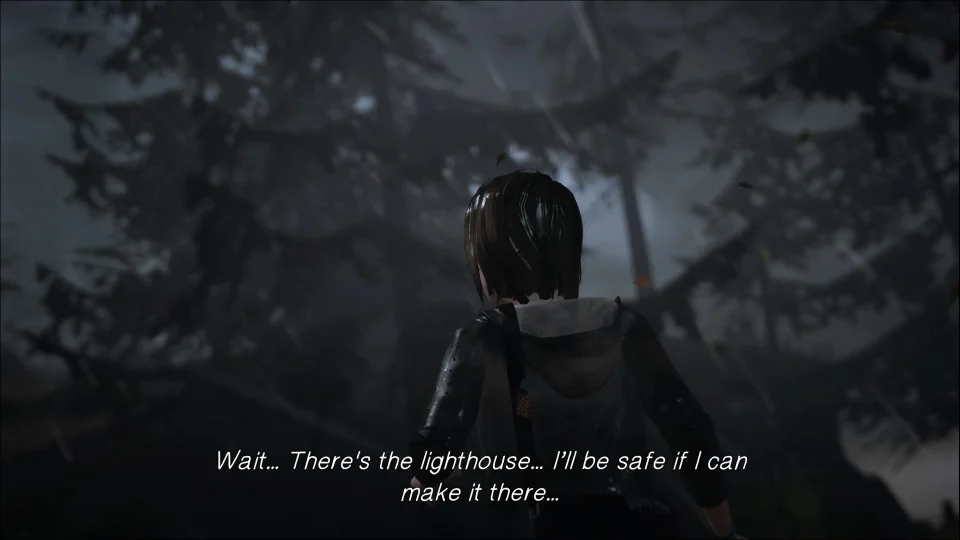
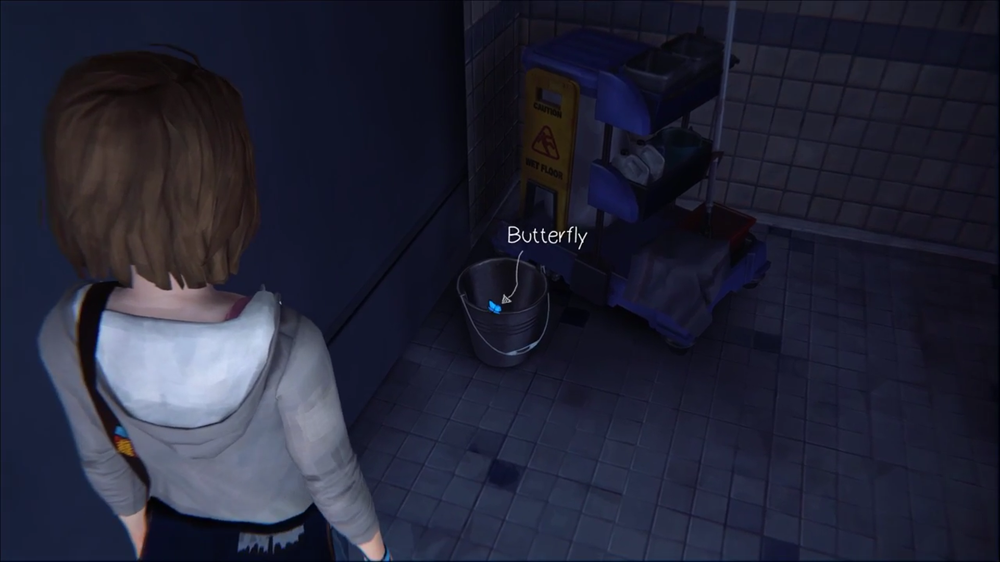
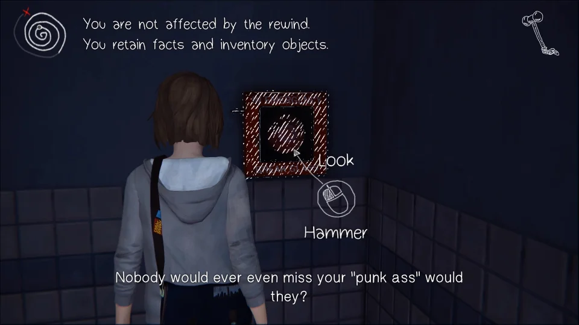
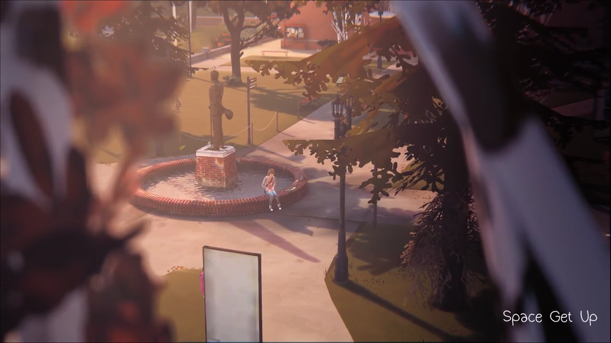
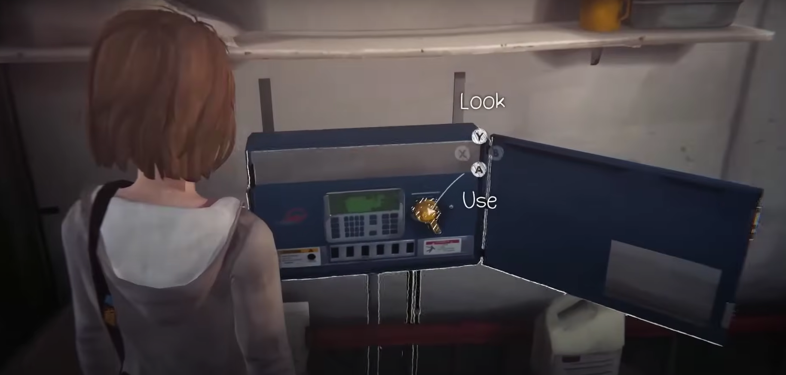
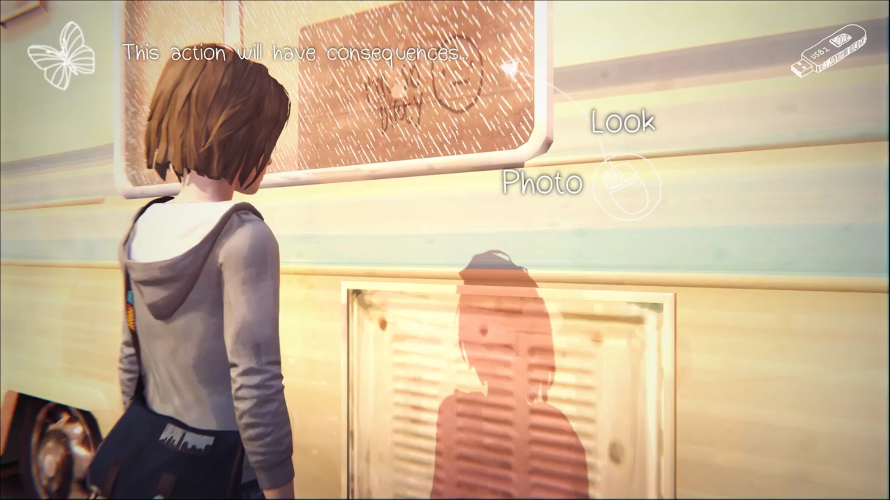
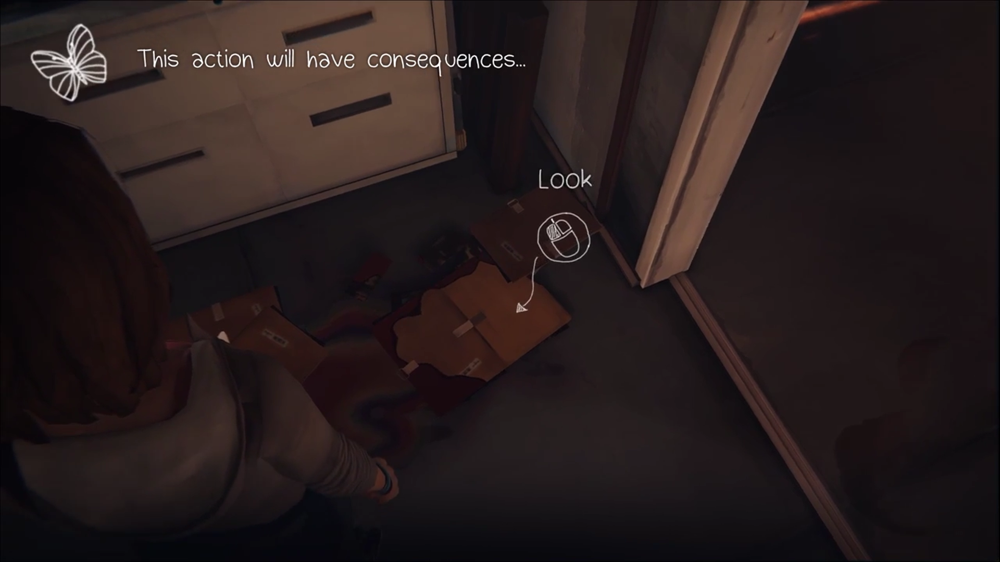
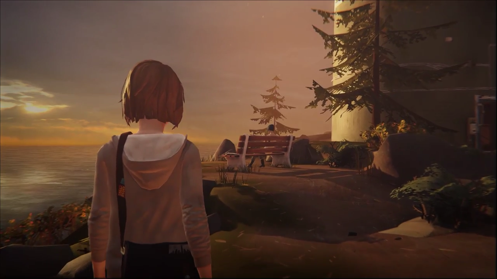
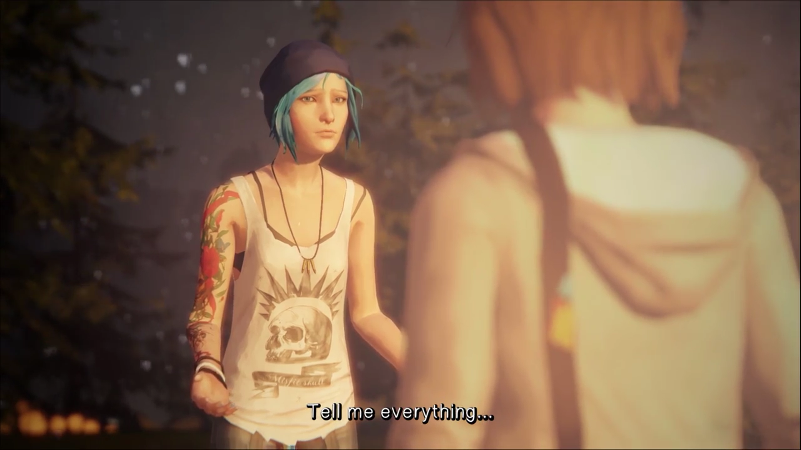

←Episodio 1: Crisalida→
El Episodio 1 comienza con Max parada en un bosque, mientras una tormenta azota a su alrededor. No hay nada que puedas hacer aquí más que caminar hacia el faro, así que hazlo. Una vez que llegues a la cima, Max se despierta y terminarás en clase. Tu profesor estará hablando, y mientras lo hace, podrás mirar alrededor varios objetos en tu escritorio.
Para continuar, necesitas tomar tu cámara y tomarte un selfie. Tu profesor se dará cuenta de esto y luego te hará una pregunta. Como no sabes la respuesta, simplemente elige cualquier cosa. Eventualmente, él dejará salir a la clase y podrás moverte libremente. Aunque tu objetivo principal es hablar con tu profesor, hay varias otras cosas con las que puedes interactuar si deseas. También hay una Foto Opcional que puedes tomar aquí. En el escritorio en el centro de la clase hay algunas escrituras de las que puedes tomar una foto. Una vez que tengas la foto, puedes seguir caminando o hablar con tu profesor. No hay una respuesta correcta para darle, así que simplemente di lo que sea y sal de clase. Fuera de clase, Max encenderá algo de música mientras camina por los pasillos. Hay muchas conversaciones opcionales que puedes tener aquí, pero tu objetivo es llegar al baño de chicas.
Una vez que entres al baño, necesitas activar el grifo para continuar la historia. Cuando lo hagas, Max verá una mariposa de la que necesitas tomar una foto. Después, un niño entrará corriendo en la habitación y poco después también entrará una chica. Las cosas se intensificarán rápidamente y la chica será herida de bala, lo que desencadenará los poderes de Max. El tiempo retrocederá por primera vez, pero en esta instancia, volverá todo el camino hasta tu clase.
Esta vez, Max romperá su cámara en pánico, y aprenderás a activar sus poderes sobre la marcha, retrocediendo en el tiempo hasta que la cámara se arregle. Recordarás sobre el selfie, así que tómatelo de nuevo y tu profesor te hará la misma pregunta otra vez. Cuando respondas, tu compañero de clase volverá a hablar, pero esta vez el juego te indicará que retrocedas. A partir de este momento, podrás aprender información y luego retroceder en el tiempo para usar esa información a tu favor. En este caso, retrocede y responde la pregunta dando la respuesta correcta del Proceso Daguerreiano.
Esta vez, cuando termine la clase y hables con el profesor, él mencionará a John Lennon. Después de la conversación, háblale nuevamente y menciona a Lennon para alegrar a tu profesor, y podrás salir de clase. Corre al baño y los eventos anteriores se desarrollarán nuevamente. Esta vez vas a intentar detenerlos, pero hay un límite de tiempo. Rápidamente, mira el carrito de mantenimiento y podrás moverlo. Una vez que lo hagas, agáchate y toma un martillo. Úsalo para romper la alarma contra incendios y activarla para salvar a la chica. Si tardas demasiado, la chica será herida de bala, pero si esto sucede, simplemente retrocede en el tiempo y sigue intentándolo hasta hacerlo lo suficientemente rápido.
Una vez que la salves, sal del baño y serás atrapado por el guardia de seguridad. Eventualmente, el director te salvará de él. Ve a hablar con el director y se te darán algunas opciones. Eventualmente llegarás a una elección crucial que tendrá repercusiones duraderas en tu juego. Estas elecciones no tienen una respuesta correcta, puedes elegir lo que quieras. Ten en cuenta que puedes retroceder en el tiempo para ver cuál resultado te gusta más, pero una vez que decidas, no podrás cambiarlo minutos u horas después.
Una vez que decidas, sal afuera. Hay muchas personas con las que ahora puedes hablar si quieres. Por supuesto, puedes omitir todo esto y simplemente ir a los dormitorios, pero si deseas hablar con personas, continúa leyendo. Al salir del edificio, gira a la izquierda y puedes hablar con un profesor, quien hablará sobre la seguridad alrededor de la escuela y preguntará si deseas firmar una petición. Esta elección importa, así que elige lo que creas que es mejor. También hay varios estudiantes con los que puedes hablar aquí, pero su diálogo es completamente opcional.
Una vez que hayas terminado, ve a los dormitorios. Aquí hay algunas personas con las que puedes hablar. También hay una Foto Opcional aquí. Simplemente ve hacia el extremo más lejano y puedes hablar con Kate; si te das la vuelta, verás la oportunidad de la foto. Hay algunas otras personas con las que puedes hablar, pero para proceder, ve a hablar con Victoria, quien está bloqueando los escalones.
Max decide que para hacer que se muevan, deberías arruinar el día de Victoria. Para hacer esto, primero debes manipular el cubo de pintura que está justo a la izquierda de donde están sentadas. Luego tendrás que correr más abajo por el camino y entrar en la sala de mantenimiento. Enciende los rociadores y esto hará que las chicas se levanten, lo que hará que la pintura caiga sobre ellas. Solo tienes alrededor de 15 segundos para hacer todo esto, así que si tardas mucho o te equivocas, retrocede en el tiempo al principio y vuelve a intentarlo hasta que lo hagas bien.
Una vez que obtengas el resultado deseado, ve y habla con Victoria. Se te presentará otra decisión importante que tomar, ya sea ser amable con ella o insultarla aún más. Nuevamente, estas elecciones tienen un impacto duradero en tu juego, así que elige sabiamente.
Ahora que estás dentro, puedes dirigirte a tu habitación. Hay varios pizarrones que puedes leer en el camino, incluso uno que puedes alterar si así lo deseas. Tu habitación está en el extremo más lejano, a la derecha. Entra y gira a tu derecha para ver un espejo. Puedes tomar una foto aquí, y esta es una de las 10 Fotos Opcionales. Puedes interactuar con varias cosas dentro de la habitación de Max, sin embargo, el objeto que continuará la historia es una nota junto a su computadora portátil. Una vez que la tengas, sal de tu habitación y dirígete por el pasillo. Verás a una chica parada afuera mientras otra grita desde adentro.

Háblale, pero ella no te prestará mucha atención porque piensa que ni siquiera la conoces. Dile que su apellido es Watson y ella se abrirá sobre lo que está pasando. Regresa por el pasillo y entra en la habitación de Victoria. Cuando entres, gira a la derecha y verás un collage de fotos. Reorganízalas y luego toma una foto, ya que esta es otra Foto Opcional. Puedes revisar varios objetos en esta habitación, pero para proceder, debes ir a su computadora y revisar sus correos electrónicos, luego imprime el que se relaciona con el problema en cuestión. Llévaselo a la chica para que se calme y te deje entrar en la habitación.
En la siguiente habitación, solo necesitas tomar tu memoria USB de su computadora portátil; sin embargo, si quieres, hay más que puedes aprender aquí. Recoge la prueba de embarazo que está cerca de la computadora, y ella se enojará contigo. Retrocede en el tiempo después de hacerlo, y luego habla con ella. Ahora tendrás la opción de decir "Escuché un rumor sobre ti". Esto la incitará a compartir lo que ha sucedido recientemente en su vida.
Sal de su habitación y ve afuera. Notarás a una estudiante sentada en un banco, pero si observas por unos segundos, verás que es golpeada por un balón de fútbol. Retrocede en el tiempo y adviértele que se mueva primero, lo que hará que el balón de fútbol golpee una ventana. Ella estará agradecida, y esto desbloqueará una Foto Opcional. Acércate a la ventana rota para tomar la foto. Cuando intentes salir de los dormitorios, verás a Kate siendo acosada por el guardia de la escuela. Intervén y ayúdala, o no, la elección es tuya.
Después de esta escena, corre por el campus hacia el estacionamiento para encontrarte con Warren. Antes de hablar con él, puedes hablar con algunos otros estudiantes. También puedes acercarte al RV estacionado y escribir en la ventana. Esto te permitirá tomar otra Foto Opcional. Una larga serie de eventos comenzará una vez que hables con Warren, que culminará en encontrarte con tu antigua amiga y tomar un paseo de regreso a su casa.
Una vez allí, entrarás en la habitación de Chloe. Al igual que en tu propia habitación, hay mucho material para leer e interactuar, y te recomendamos que lo hagas. Un artículo importante está en su armario. Puedes bajar una caja y luego leer un papel que muestra sus calificaciones de cuando estaba en la escuela. Asegúrate de retroceder después de hacer esto, ya que Chloe se enoja contigo por romper su bola de nieve en el proceso. Cuando estés listo para proceder, abre la caja debajo de su cama para obtener el CD. Cuando lo hagas, Chloe comentará algunas cosas sobre su vida, luego te dirá que pongas el CD y salgas de su habitación.
Una vez que hayas terminado, o simplemente desees continuar, dirígete al garaje. Aquí hay varias interacciones clave que vale la pena revisar. La primera es el armario de armas. Acércate, enciende la luz y luego míralo para darte cuenta de que falta un arma. Lo siguiente que debes revisar son los armarios. Uno de ellos tiene un televisor, y si lo enciendes y miras, descubrirás que la casa está llena de cámaras espía. Finalmente, en la parte superior de los armarios hay algunos archivos. Bájalos y léelos para descubrir que el padre de Chloe ha estado acosando a Kate. Asegúrate de retroceder en el tiempo después de leer esto, o de lo contrario alguien podría darse cuenta de que los archivos han sido empapados en aceite. Cuando estés listo para proceder, dirígete hacia la lavadora. Las herramientas que necesitas están encima de ella pero no puedes alcanzarlas. Para obtenerlas, primero debes mirar hacia abajo en un cartón. Empújalo debajo de la mesa y luego enciende la lavadora. Esto hará que las herramientas caigan sobre el cartón, así que sácalo y toma el juego de herramientas. Asegúrate de ser amable y apagar la lavadora después.
Regresa arriba y tú y Chloe comenzarán a hablar, y eventualmente esto conducirá a música fuerte y baile, lo cual se vuelve problemático cuando su padre llega a casa. Chloe insistirá en que te escondas, así que si quieres, dirígete a su armario. Antes de entrar, asegúrate de mover la lámpara, o de lo contrario causará que todo caiga. Una vez que la lámpara esté movida, puedes entrar con seguridad al armario y esconderte mientras su padre entra en la habitación. Eventualmente, se deberá tomar una decisión, y esta es bastante importante, así que asegúrate de revisar cuidadosamente tus opciones.
Sin importar la elección que hagas, eventualmente acabarás yendo a dar un paseo en coche con Chloe. Tu destino resulta ser el mismo lugar del principio del juego, pero sin la tormenta masiva. En lugar de caminar hacia adelante, dirígete de regreso por el camino. Hay una gran roca a la derecha con un pájaro encima. Esta es otra Foto Opcional. Una vez que la tengas, puedes subir la montaña. Hay algunos objetos a lo largo del camino con los que puedes interactuar. Una vez en la cima, párate detrás del banco en el que está Chloe, y podrás tomar otra foto. Esta es la última de las Fotos Opcionales para este episodio.
Habla con ella, y ustedes dos hablarán sobre los eventos del día. Revela tanto como quieras, pero una vez que la conversación termine, Max será forzada a otro flashback. Esta vez, mientras subes la montaña, los obstáculos caerán sobre ti, así que necesitarás retroceder en el tiempo para superar cada uno. Cuando llegues a la cima, lee el periódico para descubrir que estos eventos están a solo unos días de distancia. Esto te sacará de tu visión, y también te llevará a la escena final con Chloe, antes de que termine el Episodio 1: Crisálida.
Volver arriba Parte 2: Fuera del tiempo Parte 3: Teoría del caos Parte 4: Cuarto oscuro Parte 5: Polarizado